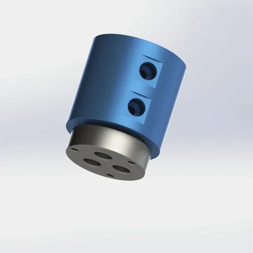
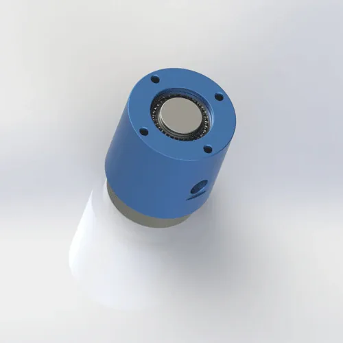
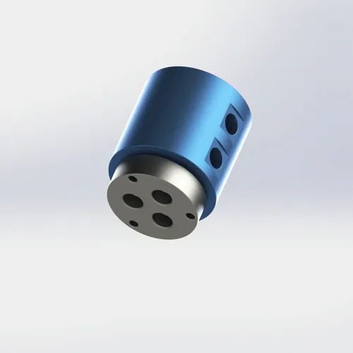

Тройной проход G1/4 резьбовым ротационным соединением с 6mm отверстием для пневматических и легких жидкостей. Композитная уплотнение PTFE, корпус AL6061. 64 × 78 mm, 360 g. Отправка в течение 7 дней.
BP-3P-0006 представляет собой трехступенчатый резьбовый ротационное соединение G1/4, предназначенный для компактных многоканальных пневматических и легких жидкостей. Отверстие 6mm обеспечивает более высокую пропускную способность, чем варианты 4mm, в то время как оболочка ?64 × 78 mm подходит для небольших рамок машины. Композитный уплотнитель PTFE обрабатывает воздух, воду, охлаждающую жидкость и легкое гидравлическое масло одним соединением уплотнения.
| Типовой номер | BP-3P-0006 |
|---|---|
| Количество проходов | 3-in-3-out (тройной проход) |
| Тип горы | G1/4 Толщина |
| Макс давление | 1 MPa (10 bar / 145 psi) - сбрасывать на 0.7 MPa для непрерывной работы с водой или охлаждающей жидкостью |
| Макс Спид | 200 RPM - смягчить до 150 RPM для непрерывной воды или охлаждающей жидкости |
| Материал для тела | AL6061 Алюминиевый сплав |
| Тип уплотнения | Композитная уплотнение PTFE с резервным копированием FKM O-ring |
| Совместимые рабочая среда | Воздух, вода, масло, охладитель, легкое гидравлическое масло (ISO VG 32 макс.) |
| Температура работы | -20°C – +80°C – |
| Чистый вес | Приближается. 0.36 kg (360 g) |
| Размер | ?64 × 78 mm |
| Сертификация | ISO 9001:2015, CE, RoHS |
| гарантия | 12 месяцев |
Алюминиевый корпус AL6061: Алюминиевый сплав 6061-T6 с выходной прочностью 276 MPa и отличной коррозионной стойкостью при анодировании. Масса 0.36 kg и оболочка ?64 × 78 mm делают это одно из самых компактных 3-х проходных резьбовых соединений. Толщина анодирования составляет 15-25 микрон для защиты от коррозии в воде и охлаждающей среде. Не рекомендуется для абразивной охлаждающей жидкости или среды с высоким воздействием без дополнительного защитного покрытия.
Композитный уплотнитель PTFE: Политетрафторэтилен со стекловолокном и графитовым наполнителем. Самосмазывающийся, химически инертный и рассчитанный на -200°C до +260°C. Композитная конструкция обеспечивает структурную целостность при сохранении низкого коэффициента трения (0,05-0,10 против стали), что делает PTFE идеальным для вращающихся уплотнений. FKM O-кольцо обеспечивает статическое уплотнение на интерфейсе корпуса. Одно уплотнительное соединение обрабатывает все совместимые носители, упрощая обслуживание.
Преимущество резьбы G1/4: Параллель BSP (BSPP) по ISO 228-1 с шагом 1.337 mm. резьба G1/4 соответствует стандартным пневматическим фитингам по всему миру, что исключает затраты на адаптер и точки утечки. Отверстие 6mm обеспечивает 2,25× площадь потока отверстия 4mm, уменьшая падение давления в вакууме и приложениях с высоким потоком. Для еще меньших конвертов вариант G1/8 BP-3P-0007 предлагает отверстие 4mm в корпусе ?78,9 × 63.9 mm.
BP-3P-0006 предназначен для компактных многоканальных пневматических приложений, где резьбовые соединения G1/4 предпочтительнее фланцевых креплений. Отверстие 6mm и масса 0.36 kg делают его идеальным для оборудования для автоматизации среднего размера. Эта модель может быть пригодна для перечисленных применений, когда ее количество проходов, крепление, среда, давление, скорость и температурные пределы соответствуют требованиям машины.
Правильная установка продлевает срок службы уплотнение с 6 месяцев до 12+ месяцев. Наиболее распространенной причиной раннего отказа на резьбовых соединение является затягивание, которое искажает корпус AL6061 и неравномерно сжимает уплотнение PTFE. Следуйте этим шагам для надежной работы.
BP-3P-0006 использует параллельные потоки G1/4 BSP (BSPP) на ISO 228-1. Подтвердите, что ваше оборудование имеет женские резьбы G1/4 или соответствующие адаптеры. 4×M6 монтажные отверстия на корпусе предназначены для антивращательных скобок, а не для крутящего момента. Загрузите 2D-чертеж для точных размеров резьбы, шага (1.337 mm) и допусков. Варианты NPT и метрических потоков доступны в виде заказов с 10-дневным временем выполнения заказа.
Используйте ленту PTFE (3-4 обертывания) или анаэробный жидкостный герметик на мужских резьба G1/4. Затягивание рук плюс 1/4 оборота максимум. Уплотнение искажает корпус уплотнения, сжимая уплотнение PTFE неравномерно и создавая путь утечки в течение нескольких дней. Спектр крутящего момента: 10-15 Н·м для G1/4. Используйте крутящий момент — «плотный палец плюс четверть оборота» недостаточно точен для алюминиевого корпуса 0.36 kg. Не используйте трубные ключи.
Используйте монтажные отверстия 4×M6, чтобы прикрепить ротационное соединение корпус к фиксированной скобке. Торк M6 болтает до 6-8 Н·м. Никогда не позволяйте телу свободно вращаться с валом — шланги подачи будут скручиваться, и уплотнение будет испытывать обратный крутящий момент, ускоряя износ. Противовращающая кронштейн должна иметь >3 mm клиренс от вращающихся частей и не должна напрягать корпус боковыми нагрузками.
Используйте гибкие шланги (не жесткие трубы), чтобы подключить стационарную сторону к подаче воздуха. Жесткая труба передает вибрацию и тепловое расширение непосредственно в соединение, подчеркивая уплотнение. Установите 40-микронный фильтр вверх по течению, чтобы защитить уплотнение PTFE от мусора. Для воды или хладагента добавьте Y-натяжитель (60 сеток), чтобы предотвратить повреждение частиц. Пометьте каждый шланг, чтобы соответствовать соответствующему номеру прохода, чтобы избежать перекрестного соединения.
Бег при низком давлении (0.2 MPa) и низкой скорости (50–100 RPM) в течение 5 минут без нагрузки. Это уплотняет уплотнение PTFE против поверхности вала, создавая микрогладкую контактную зону. Проверьте все три интерфейса уплотнение на наличие утечек. При сухости постепенно увеличивайте рабочее давление и скорость более чем на 10 минут. Пропускаем скачок Это причина No2 раннего отказа уплотнения - уплотнение требует времени, чтобы соответствовать отделке поверхности вала.
Полные размеры, допуски, спецификации резьбы G1/4, детали отверстия 6mm, рисунок отверстия для крепления M6 и детали канавки уплотнения. 120 КБ.
Бесплатные 3D-файлы после запроса. Включает точную геометрию резьбы G1/4, 6mm траектории отверстий и рисунок отверстия для крепления M6. Используйте для проверки соответствия CAD перед заказом.
Полное руководство: сопоставление потоков, спецификации крутящего момента, антиротация, фильтрация, процедура запуска и контрольный список обслуживания. 650 КБ.
AL6061 отслеживаемость материалов, отчет о тестах на твердость и сертификат соответствия RoHS. Доступен по запросу с заказом.
Не уверены, что BP-3P-0006 является правильной моделью? Используйте это сравнение, чтобы решить — и точно знать, когда перейти на другой размер резьбы, фланцевое крепление или соединение с более высоким давлением.
| Ваши требования | BP-3P-0006 Fit | Лучшая альтернатива | Почему модернизировать |
|---|---|---|---|
| Одиночная воздушная линия, ручной инструмент, критический вес | s Overkill — 0.36 kg, 3 пассажа | BP-1P-0003 | 0.08 kg Алюминий, одноместный проход, более низкая стоимость |
| Двойные воздушные линии, 1 MPa, общая автоматизация | ️ Требуется меньшее количество проходов | BP-2P-0002 | Тот же поток G1/4, 1.5 MPa, двойной проход |
| Тройные линии, резьба G1/4, компактное, 6mm отверстие | *Идеальный* | — | — |
| Тройные линии, фланцевое крепление предпочтительнее | Неправильная гора | BP-3P-0004 | Те же 3 прохода, фланцевое крепление, лучшее вибрационное сопротивление |
| Тройные линии, G1/8 меньшая резьба, 4mm | Неправильный размер | BP-3P-0007 | G1/8 thread, 4mm orifice, ?78.9 × 63.9 mm для миниатюрных оснастка |
| Давление >1.0 MPa (например, 1.5 MPa гидравлическое) | Сверх давления | BP-2P-130-0001 | 5 MPa номинальная, фланец установка, тяжелая работа |
| Требуется более 4 независимых проходов | Слишком мало проходов | BP-8P-0001 | 8 проходов с независимыми уплотнение, фланцевое крепление |
Причина No1 для BP-3P-0006 гарантийных претензий является завышенной. Техник использует трубный гаечный ключ и наносит 20 Н·м на резьбу G1/4, рассчитанную на 10-15 Н·м. Корпус AL6061 искажает, сжимая уплотнение PTFE неравномерно. Неправильная установка или эксплуатация за пределами указанных пределов может привести к преждевременной утечке. Время отказа зависит от выравнивания, среды, давления, скорости, температуры и рабочего цикла. Техник обвиняет качество уплотнение и просит заменить ее, но основной причиной был крутящий момент установки. Правило: Используйте гаечный ключ. Затягивание рук плюс 1/4 оборота максимум. G1/4: 10-15 Н·м. Никогда не используйте трубные гаечные ключи на алюминиевых корпусах.
Машиностроитель подключает BP-3P-0006 к воздухоснабжению жесткой стальной трубой, чтобы «сохранить пространство». Труба передает вибрацию от компрессора непосредственно к соединение, создавая цикл усталости на уплотнении PTFE. В течение 6 недель уплотнение развивает микротрещины и утечки. Жесткая труба также препятствует малому осевому движению, необходимому для теплового расширения. Правило: Всегда используйте гибкие шланги, рассчитанные на ваше давление. Гибкий шланг поглощает вибрацию и обеспечивает тепловое движение. 50 mm гибкого шланга экономит 45 долларов за замену уплотнения.
Команда техобслуживания устанавливает BP-3P-0006 на таблицу индексации и сразу же запускает ее на 0.8 MPa и 150 RPM. Уплотнение PTFE не вписывается в поверхность вала — микроскопические высокие пятна создают пути утечки. В течение 2 недель вакуум падает от -0.07 MPa до -0.04 MPa, и детали выпадают из оснастка. Команда заменяет уплотнение, но то же самое происходит снова, потому что они пропускают пробежку каждый раз. Правило: Бегите по 0.2 MPa и 50–100 RPM в течение 5 минут до полной работы. Это усыпляет уплотнение и продлевает жизнь от 6 месяцев до 12+ месяцев.
Другие вращающиеся соединения, обычно покупаемые с BP-3P-0006, или модели, которые вы обновляете, когда вашему приложению требуется другой размер резьба, крепление фланец или более проходов.
Стандарт BP-3P-0006 использует полный алюминиевый корпус AL6061 для легкого веса и хорошей коррозионной стойкости. Масса 0.36 kg и конверт ?64 × 78 mm делают его одним из самых компактных 3-х проходных резьбовых соединений. Для полной стальной конструкции (более тяжелая, но более высокая жесткость) или специальных обработок поверхности обратитесь к нашей инженерной команде. Все версии производятся в соответствии с ISO 9001:2015 и имеют сертификаты CE и RoHS. Материальные сертификаты с полной прослеживаемостью доступны по запросу с каждым заказом.
Да — композитное уплотнение PTFE и O-кольцо FKM совместимы с водой, водорастворимой охлаждающей жидкостью и легким гидравлическим маслом до ISO VG 32. Для непрерывной работы на воде уменьшайте давление до 0.7 MPa и скорость до 150 RPM, чтобы уменьшить износ уплотнения. Корпус AL6061 анодируется на коррозионную стойкость, что делает его пригодным для прерывистого воздействия воды и охлаждающей жидкости. Для непрерывного погружения в воду или деионизированной воды укажите версию из нержавеющей стали (304/316). Всегда используйте 40-микронный фильтр для защиты уплотнения от повреждения твердыми частицами.
BP-3P-0006 использует параллельные потоки G1/4 BSP (BSPP) на ISO 228-1. Параллельные резьба BSP запечатываются на прокладке или O-кольце на лицевой стороне порта, а не на самой резьба. Это означает, что лента PTFE на резьбе предназначена только для герметизации; механическое соединение производится плоской поверхностью, сжимающейся против порта для спаривания. Загрузите рисунок 2D PDF для точных размеров потока, шага (1.337 mm для G1/4) и допусков. Варианты NPT и метрических потоков доступны в виде заказов с 10-дневным временем выполнения заказа.
Бесплатные файлы 3D STEP и IGES предоставляются после отправки запроса. Файл содержит точную геометрию резьбы G1/4, пути отверстия 6mm, шаблон монтажного отверстия 4×M6 и оболочку корпуса 0.36 kg AL6061. Используйте 3D-файл, чтобы проверить клиренс, направление порта и длину вовлечения потока в сборке CAD перед заказом. 3D-файлы могут быть предоставлены для квалифицированных проектов после рассмотрения требований приложения. Доступность файлов и время отклика зависят от модели и предоставленной информации о проекте. Пользовательские конфигурации моделируются по запросу.
Обновление, когда ваше приложение превышает предел давления 1 MPa, ограничение скорости 200 RPM или нуждается в другом стиле крепления. Общие триггеры: (1) Ваше требование давления выше 1.0 MPa - BP-2P-130-0001 обрабатывает 5 MPa с фланцевым креплением. (2) Требуется крепление фланца для лучшего сопротивления вибрации — BP-3P-0004 обеспечивает те же 3 прохода с креплением фланца. (3) Для миниатюрных оснастка нужна резьба меньшего размера G1/8 — BP-3P-0007 предлагает 4mm отверстие в корпусе ?78.9 × 63.9 mm. (4) Вам нужно 4 или более каналов - BP-8P-0001 обеспечивает 8 проходов. Стоимость модернизации обычно составляет 15-90 долларов США, но она предотвращает отказ уплотнения от чрезмерного давления или устаревания.
Мы проектируем индивидуальные поворотные соединения для любого количества проходов, давления, типа резьбы и стиля монтажа. Бесплатный 3D-файл STEP с каждым запросом. Типичное обычное время выполнения: 10-14 дней.
Запросить пользовательский дизайнТехнический примечание: Все рейтинги давления, оценки скорости и спецификации материалов, упомянутые на этой странице, основаны на стандартных пневматических вращающихся соединениях Begapunk BP-series, проверенных в контролируемых лабораторных условиях. Фактическая производительность зависит от условий эксплуатации, качества среды, практики установки и графика обслуживания. Для приложений, не относящихся к стандартным рейтингам, включая гидравлические системы высокого давления выше 1 MPa, непрерывное погружение в воду, пищевые продукты или чистые помещения, проконсультируйтесь с заводской инженерией Begapunk перед спецификацией. Последнее обновление: 11 июня 2026 года.